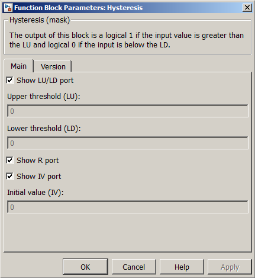

| MBDS Environment |
|
Hysteresis |
MATLAB Helpdesk |
General
Binary hysteresis (relay behavior).
Library
DescriptionMBDS Blockset
The Output of this block is a logical true if the input value is greater than the LU and logical false if the input is below the LD.
Using the parameter mask the block can be configured according to the users needs. Via register card Main the block input and output ports can be shown or hidden (see Figure 1).
- Show LU/LD port. If checked, the block provides an enable input port for LU and LD.
- Upper threshold limit (LU). Here the upper threshold limit (LU) can be specified if Show LU/LD port is hidden.
- Lower threshold limit (LD). Here the Lower threshold limit (LD) can be specified if Show LU/LD port is hidden.
- Show R port. If checked, the block provides a reset input port. If unchecked, the block cannot be reset.
- Show IV port. If checked, the block provides an input port for the initial value used when reset the block. If unchecked, the initial value can be configured via a mask parameter.
- Initial value (IV). Here the initial value can be specified if the IV port is hidden.

Figure 1: Parameter Mask Dialog - Register card MainThe register card Version displays the block version information.
Inputs and Outputs
Example*)Except enumeration data types.
Port I/O Data Type Description LU In Any* Upper threshold value LD In Any* Lower threshold value u
In Any* Input signal R In boolean Resets the block state to its initial value while true IV In boolean Initial value set upon reset y Out boolean Outputs true if above LU, false if below LD, unchanged otherwise
Refer to the example.